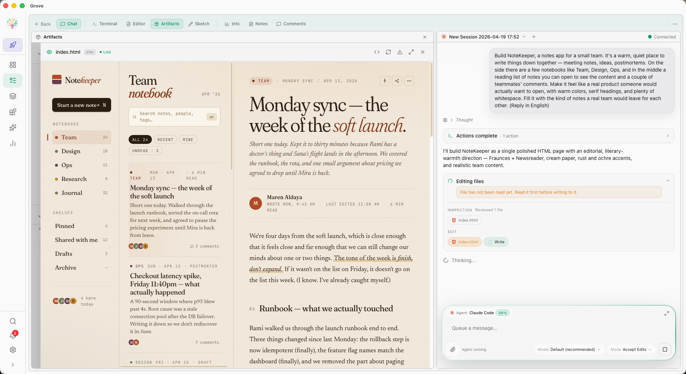
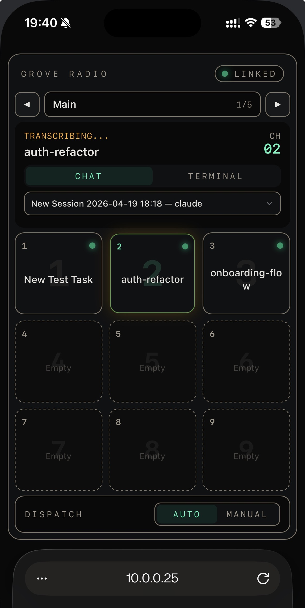
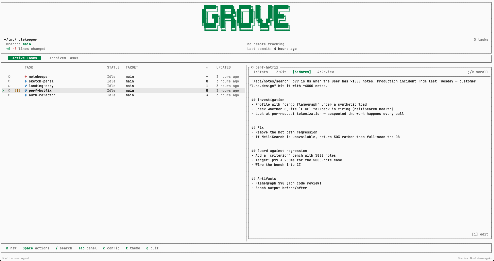
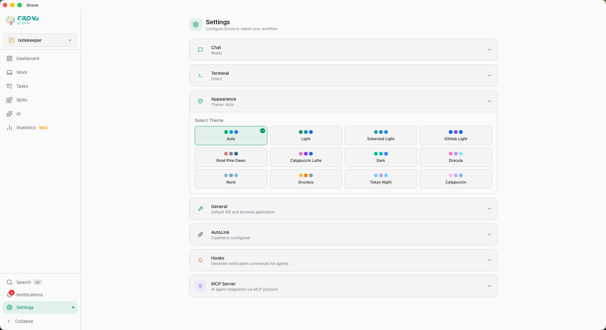
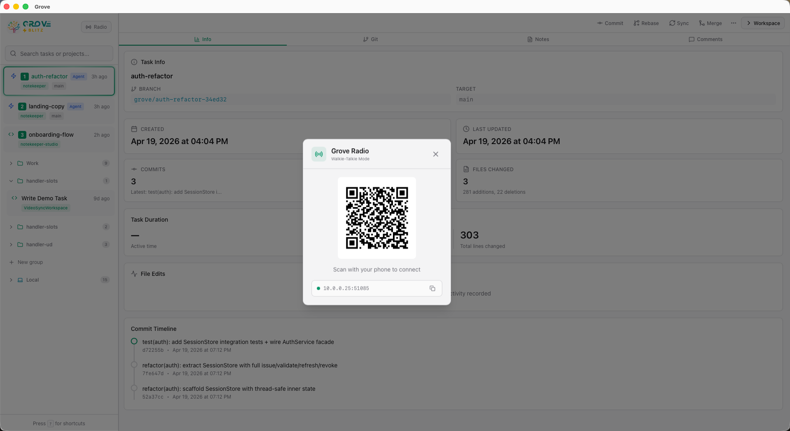

One binary, four surfaces, and a walkie-talkie. The same workspace lives in your terminal, your browser, your native desktop window, and your phone. Same tasks. Same agents. Same worktrees. Different input, same output.



The Web IDE is Grove's main surface — a full multi-panel workspace for chat, sketch, review, terminal, and Studio. The native desktop window, the phone, and the classic TUI are alternate ways into the same workspace.
The full Grove IDE — FlexLayout, Studio, Chat, Sketch, Review — in your browser. Localhost-only by default. Custom port with --port.
The same IDE in a native Tauri window. Daemonizes on launch. macOS ships with the DMG; Linux and Windows via feature flag.
LAN access for your phone or tablet. HMAC request signing. QR code onboarding. Optional TLS. Pair with Radio to drive the whole thing by voice.
The original Grove surface — a keyboard-driven terminal UI for when you want to stay in your shell. Keys: n new · ⏎ open · / search · ? help.
Run grove with no arguments and you return to the last mode
you used — with the arguments you used. First time? It starts the TUI.
Grove remembers how you like to work.
Grove's Web UI is powered by FlexLayout — real multi-panel drag and drop. Chat, Terminal, Review, Editor, Stats, Git, Notes, Comments, Plan, Todo, Sketch, Studio. Arrange them. Save the arrangement.
Chat · Terminal · Review · Editor · Stats · Git · Notes · Comments · Artifacts · Sketch. Drag, split, resize — it's a real multi-panel layout.
Close them all for a clean canvas with quick-add buttons and ⌘K for rapid panel insertion. Your layout is remembered across tab switches.
Familiar IDE-style chrome with a task-switcher popup. Panel-level maximize and three-state toggles for Chat and Terminal.

11 built-in themes including Dracula, Nord, Gruvbox, Tokyo Night, and Catppuccin. Auto-detects your system dark/light mode. The terminal, editor, and chrome all align.
Radio is Grove's walkie-talkie for your phone. Hold to speak. Your voice transcribes to a chat session — or directly into the task's terminal. Your agents hear you from wherever you are.
Nine task slots on a channel grid. Hold a slot to talk; the transcript lands in the right chat or terminal in real time. Switch between Chat and Terminal per slot. Cycle channels to group tasks by context.
Run Grove on a Mac Mini at home. Keep your tasks moving from a coffee shop, a car, a couch. Authentication is HMAC — your secret key never leaves your devices, even when the network is hostile.

Every request is signed with HMAC-SHA256 using a secret embedded in the QR code. The secret never travels over the wire. Nonce-based replay prevention means captured traffic can't be reused.
grove mobile # LAN, HMAC auth
grove mobile --tls # + self-signed HTTPS
grove mobile --cert a.pem --key a.key # + your own cert
grove mobile --public # bind to all interfaces
Every request signed. Nonce + ±60s timestamp window. Secret never sent. Perfect for a trusted LAN.
Add --tls. Traffic is encrypted. You'll see a one-time trust prompt in your browser.
Pass --cert and --key. Combine with Tailscale or a domain for zero-warning access.
Not just where you code. Not just when you're at the desk.